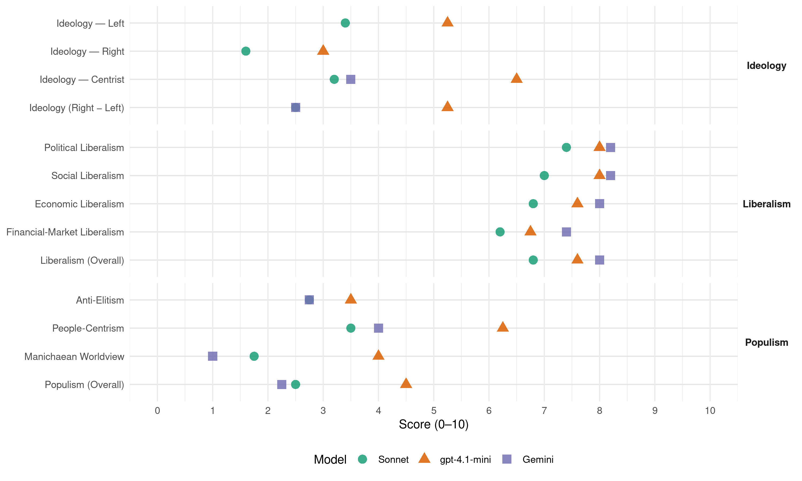

(Chile, 2021)
manifesto_id 155061_202111
Get full text: This site shows derived annotations and short verbatim quotes only. The full manifesto text is © Manifesto Project / WZB — obtain it via manifesto-project.wzb.eu using the manifesto_id above.
Headline scores
| Dimension | Sonnet | gpt-4.1-mini | Gemini |
|---|---|---|---|
| Populism (Overall) | 2.5 | 4.5 | 2.2 |
| Anti-Elitism | 2.8 | 3.5 | 2.8 |
| People-Centrism | 3.5 | 6.2 | 4.0 |
| Manichaean Worldview | 1.8 | 4.0 | 1.0 |
| Ideology (Right − Left) | 2.5 | 5.2 | 2.5 |
| Liberalism (Overall) | 6.8 | 7.6 | 8.0 |
| Political Liberalism | 7.4 | 8.0 | 8.2 |
| Social Liberalism | 7.0 | 8.0 | 8.2 |
| Economic Liberalism | 6.8 | 7.6 | 8.0 |
| Financial-Market Liberalism | 6.2 | 6.8 | 7.4 |
Evidence per dimension
Economic Liberalism
Gemini · score 8.0 · verified · chunk 1
“crecimiento económico, la competencia justa, la inexistencia de monopolios”
con mayor productividad, que impulse el crecimiento económico, la competencia justa, la inexistencia de monopolios, la relación entre capital
Gemini · score 8.0 · verified · chunk 2
“comercio exterior y de la inversión extranjera”
Nuestro país tiene una alta dependencia del comercio exterior y de la inversión extranjera como motor de nuestro desarrollo. Ambos son factores
Gemini · score 8.0 · verified · chunk 3
“mercados: más competitivos, innovadores y abiertos”
esta estrategia de desarrollo requerimos de mejores mercados: más competitivos, innovadores y abiertos. No tenemos miedo a decir de forma
Gemini · score 8.0 · verified · chunk 4
“libre elección del suministrador de energía y aumente la competencia”
modernización de la distribución eléctrica, que garantice a los consumidores la libre elección del suministrador de energía y aumente la competencia en los múltiples
Gemini · score 8.0 · verified · chunk 5
“promover el emprendimiento, que amplía la competencia”
pilares de nuestro gobierno será promover el emprendimiento, que amplía la competencia, aumenta la innovación y redistribuye
gpt-4.1-mini · score 7.0 · verified · chunk 1
“mejorar la calidad y cobertura de la educación, las políticas y planes de capacitación”
Para que una economía pequeña y abierta como nuestra pueda continuar compitiendo con éxito en los mercados internacionales se hace indispensable invertir en las personas e incrementar su capital humano y social. En esa perspectiva, es necesario mejorar la calidad y cobertura de la educación, las políticas y planes de capacitación,
gpt-4.1-mini · score 8.0 · verified · chunk 2
“Mantendremos, modernizaremos y complementaremos nuestra amplia red de acuerdos comerciales”
…Nuestro país tiene una alta dependencia del comercio exterior y de la inversión extranjera como motor de nuestro desarrollo… Mantendremos, modernizaremos y complementaremos nuestra amplia red de acuerdos comerciales, propendiendo al aumento de valor en nuestra oferta exportable de bienes y servicios y la integración a cadenas globales de valor…
gpt-4.1-mini · score 8.0 · verified · chunk 3
“más competitivos, innovadores y abiertos”
Para esta estrategia de desarrollo requerimos de mejores mercados: más competitivos, innovadores y abiertos. No tenemos miedo a decir de forma clara que se necesita todo el mercado posible, porque es la forma más eficiente de asignar recursos en una sociedad libre.
gpt-4.1-mini · score 8.0 · verified · chunk 4
“mercados que funcionen bien, asignan los recursos eficientemente”
…Los países que han alcanzado el desarrollo lo han hecho gracias al buen funcionamiento de sus mercados. Cuando los mercados funcionan bien, asignan los recursos eficientemente; premian a aquellos que se esfuerzan más, sin distinción de origen, género o edad; incentivan el emprendimiento y permiten una convivencia más igualitaria, con menos concentración de poder, mejores oportunidades y mayores niveles de distribución de la riqueza.
gpt-4.1-mini · score 7.0 · verified · chunk 5
“promover el emprendimiento, que amplía la competencia, aumenta la innovación”
4.4 EL EMPRENDIMIENTO COMO MOTOR DE LA ECONOMÍA Objetivo general El emprendimiento es uno de los pilares fundamentales de nuestro programa de gobierno. Es un factor clave para la promoción social, el despliegue de talentos y la creatividad, así como para incrementar la competencia y la innovación.
Sonnet · score 7.0 · verified · chunk 1
“competencia justa, la inexistencia de monopolios”
que estimule un desarrollo integral desde la sociedad, con mayor productividad, que impulse el crecimiento económico, la competencia justa, la inexistencia de monopolios
Sonnet · score 6.0 · verified · chunk 2
“amplia red de acuerdos comerciales”
Mantendremos, modernizaremos y complementaremos nuestra amplia red de acuerdos comerciales, propendiendo al aumento de valor en nuestra oferta exportable
Sonnet · score 7.0 · verified · chunk 3
“se necesita todo el mercado posible”
No tenemos miedo a decir de forma clara que se necesita todo el mercado posible, porque es la forma más eficiente de asignar recursos en una sociedad libre.
Sonnet · score 7.0 · verified · chunk 4
“los mercados funcionan bien, asignan los recursos eficientemente”
Cuando los mercados funcionan bien, asignan los recursos eficientemente; premian a aquellos que se esfuerzan más, sin distinción de origen, género o edad; incentivan el emprendimiento
Sonnet · score 7.0 · verified · chunk 5
“amplía la competencia, aumenta la innovación”
El emprendimiento es uno de los pilares fundamentales de nuestro programa de gobierno… amplía la competencia, aumenta la innovación y redistribuye los ingresos.
Financial-Market Liberalism
Gemini · score 8.0 · verified · chunk 1
“profundización y ampliación del sector financiero”
Esto implica reglas claras y estables, profundización y ampliación del sector financiero y un rol activo del Estado
Gemini · score 7.0 · verified · chunk 2
“respaldado íntegramente con instrumentos en el mercado de capitales”
por un Fondo Colectivo Solidario de gestión centralizada, utilizando cuentas nacionales individuales y respaldado íntegramente con instrumentos en el mercado de capitales.
Gemini · score 7.0 · verified · chunk 3
“programas de apoyo financiero con enfoque indígena”
b) Avanzaremos en programas de educación financiera y programas de apoyo financiero con enfoque indígena. 2.13.5Reforzar la identidad
Gemini · score 8.0 · verified · chunk 4
“profundizar regulación y supervisión de las transacciones en mercados financieros”
respaldo ciudadano al mercado. Además de profundizar regulación y supervisión de las transacciones en mercados financieros (compraventa acciones, bonos
Gemini · score 7.0 · verified · chunk 5
“bancos e instituciones financieras a entregar información”
urgencia al proyecto que obliga a bancos e instituciones financieras a entregar información sobre saldos en cuentas
gpt-4.1-mini · score 7.0 · verified · chunk 1
“profundización y ampliación del sector financiero y un rol activo del Estado en fomentar mayor transparencia”
Esto implica reglas claras y estables, profundización y ampliación del sector financiero y un rol activo del Estado en fomentar mayor transparencia e integridad de los mercados.
gpt-4.1-mini · score 7.0 · verified · chunk 2
“evaluaremos la implementación de un mecanismo que examine el ingreso de inversión extranjera directa”
…Con el objeto de resguardar nuestra Seguridad Nacional, evaluaremos la implementación de un mecanismo que examine el ingreso de inversión extranjera directa (IED) al país en determinados sectores estratégicos, con un sistema previamente establecido y estándares claros y transparentes.
gpt-4.1-mini · score 7.0 · verified · chunk 4
“Ley Fintech y libre acceso a la arquitectura financiera y tecnológica”
…aseguraremos que, al igual como funciona con las redes de telecomunicaciones, las Fintech puedan utilizar la infraestructura de los bancos de manera regulada, con precios regulados y revisados de manera periódica.
gpt-4.1-mini · score 6.0 · verified · chunk 5
“apoyar y darle urgencia al proyecto que obliga a bancos e instituciones financieras”
8) Apoyar y darle urgencia al proyecto que obliga a bancos e instituciones financieras a entregar información sobre saldos en cuentas financieras al SII en la medida que dichos saldos o sumas de abonos registren movimientos diarios, semanales o mensuales iguales o superiores a 1.500 UF (unos 45 millones de pesos).
Sonnet · score 7.0 · verified · chunk 1
“Banco Central efectivamente autónomo”
Uno de los fundamentos clave de este progreso ha sido tener un Banco Central efectivamente autónomo dedicado a atajar la inflación
Sonnet · score 5.0 · verified · chunk 2
“respaldado íntegramente con instrumentos en el mercado de capitales”
el cual será administrado por un Fondo Colectivo Solidario de gestión centralizada, utilizando cuentas nacionales individuales y respaldado íntegramente con instrumentos en el mercado de capitales.
Sonnet · score 6.0 · verified · chunk 3
“capital semilla o crowdfunding para los emprendimientos”
Facilitar el capital semilla o crowdfunding para los emprendimientos que se encuentran en etapas tempranas de desarrollo.
Sonnet · score 7.0 · verified · chunk 4
“Nueva Ley Mercado de Capitales”
Se propondrá una nueva Ley del mercado de capitales con el objetivo de actualizar la normativa vigente y darle mayor profundidad y acceso al mercado de deuda (bonos) y al mercado accionario
Sonnet · score 6.0 · verified · chunk 5
“facilitar el acceso a créditos de inversión”
mantener mecanismos de garantías, como el Fondo de Garantía para Pequeños Empresarios (FOGAPE), facilitar el acceso a créditos de inversión, capital de trabajo a tasas convenientes
Political Liberalism
Gemini · score 9.0 · verified · chunk 1
“la democracia representativa es el mejor régimen”
sostenemos que, si bien es indispensable introducir nuevos y mejores mecanismos de participación ciudadana, la democracia representativa es el mejor régimen posible para nuestro país.
Gemini · score 8.0 · verified · chunk 2
“fortalecer el sistema democrático para enfrentar”
como motor de las economías; fortalecer el sistema democrático para enfrentar con éxito los retos políticos, sociales, económicos
Gemini · score 8.0 · verified · chunk 3
“decida democráticamente a la brevedad”
en el Congreso, esperamos que este tema se debata y decida democráticamente a la brevedad. Con independencia de esto, reconocemos
Gemini · score 8.0 · verified · chunk 4
“garantice el respeto al Estado de Derecho”
pública y el acceso a la salud, y garantice el respeto al Estado de Derecho. Sin ello no habrá
Gemini · score 8.0 · verified · chunk 5
“la democracia representativa es el sistema mediante”
en el restablecimiento de las confianzas en los representantes políticos. La democracia representativa es el sistema mediante el cual la ciudadanía elige
gpt-4.1-mini · score 8.0 · verified · chunk 1
“defender, pero también reformar, la representatividad”
Queremos potenciar y rehabilitar la política para que vuelva a estar al servicio de las personas. Ello exige defender, pero también reformar, la representatividad, además de modernizar el Estado y mejorar sus mecanismos de intervención sobre la realidad.
gpt-4.1-mini · score 8.0 · verified · chunk 2
“fortalecer el sistema democrático para enfrentar con éxito los retos políticos”
…el país requiere adaptarse al impacto del establecimiento de la cuarta revolución industrial… fortalecer el sistema democrático para enfrentar con éxito los retos políticos, sociales, económicos y estratégicos que impone el cambio climático…
gpt-4.1-mini · score 8.0 · verified · chunk 3
“derecho a la educación desde la primera infancia en un contexto de libertad de enseñanza”
Velaremos por garantizar el derecho a la educación desde la primera infancia en un contexto de libertad de enseñanza en que el Estado y la sociedad civil asumen un compromiso para proveer un servicio educativo de calidad.
gpt-4.1-mini · score 8.0 · verified · chunk 4
“democracia, derechos, elecciones, tribunales”
…Transformar el Estado de verdad, no solo para que entregue sus servicios de manera eficaz y eficiente, sino para que mejore la educación pública y el acceso a la salud, y garantice la seguridad y el respeto al Estado de Derecho. Sin ello no habrá emprendimiento, inversión ni innovación.
gpt-4.1-mini · score 8.0 · verified · chunk 5
“fortalecer a los partidos políticos y, sobre todo, modernizar el Estado”
Asimismo, urge fortalecer a los partidos políticos y, sobre todo, modernizar el Estado para que esté al servicio de los ciudadanos y no capturado por los intereses de gremios, sindicatos, partidos políticos y los propios funcionarios públicos.
Sonnet · score 8.0 · verified · chunk 1
“democracia representativa es el mejor régimen”
sostenemos que, si bien es indispensable introducir nuevos y mejores mecanismos de participación ciudadana, la democracia representativa es el mejor régimen posible para nuestro país.
Sonnet · score 7.0 · verified · chunk 2
“fortalecer el sistema democrático”
fortalecer el sistema democrático para enfrentar con éxito los retos políticos, sociales, económicos y estratégicos que impone el cambio climático
Sonnet · score 7.0 · verified · chunk 3
“este tema se debata y decida democráticamente”
Considerando que hay un proyecto de ley en discusión en el Congreso, esperamos que este tema se debata y decida democráticamente a la brevedad.
Sonnet · score 7.0 · verified · chunk 4
“garantice la seguridad y el respeto al Estado de Derecho”
Transformar el Estado de verdad, no solo para que entregue sus servicios de manera eficaz y eficiente, sino para que mejore la educación pública y el acceso a la salud, y garantice la seguridad y el respeto al Estado de Derecho
Sonnet · score 8.0 · verified · chunk 5
“La democracia representativa es el sistema”
La democracia representativa es el sistema mediante el cual la ciudadanía elige a sus representantes en elecciones periódicas, y son estos los llamados a tomar las decisiones
Liberalism (Overall)
Gemini · score 8.0 · verified · chunk 1
“la democracia representativa es el mejor régimen”
sostenemos que, si bien es indispensable introducir nuevos y mejores mecanismos de participación ciudadana, la democracia representativa es el mejor régimen posible para nuestro país.
Gemini · score 8.0 · verified · chunk 2
“fortalecer el sistema democrático para enfrentar”
como motor de las economías; fortalecer el sistema democrático para enfrentar con éxito los retos políticos, sociales, económicos
Gemini · score 8.0 · verified · chunk 3
“mercados: más competitivos, innovadores y abiertos”
esta estrategia de desarrollo requerimos de mejores mercados: more competitivos, innovadores y abiertos. No tenemos miedo a decir de forma
Gemini · score 8.0 · verified · chunk 4
“libre elección del suministrador de energía y aumente la competencia”
modernización de la distribución eléctrica, que garantice a los consumidores la libre elección del suministrador de energía y aumente la competencia en los múltiples
Gemini · score 8.0 · verified · chunk 5
“la democracia representativa es el sistema mediante”
en el restablecimiento de las confianzas en los representantes políticos. La democracia representativa es el sistema mediante el cual la ciudadanía elige
gpt-4.1-mini · score 7.0 · verified · chunk 1
“defender, pero también reformar, la representatividad”
Queremos potenciar y rehabilitar la política para que vuelva a estar al servicio de las personas. Ello exige defender, pero también reformar, la representatividad, además de modernizar el Estado y mejorar sus mecanismos de intervención sobre la realidad.
gpt-4.1-mini · score 8.0 · verified · chunk 2
“fortalecer el sistema democrático para enfrentar con éxito los retos políticos”
…el país requiere adaptarse al impacto del establecimiento de la cuarta revolución industrial… fortalecer el sistema democrático para enfrentar con éxito los retos políticos, sociales, económicos y estratégicos que impone el cambio climático…
gpt-4.1-mini · score 8.0 · verified · chunk 3
“más competitivos, innovadores y abiertos”
Para esta estrategia de desarrollo requerimos de mejores mercados: más competitivos, innovadores y abiertos. No tenemos miedo a decir de forma clara que se necesita todo el mercado posible, porque es la forma más eficiente de asignar recursos en una sociedad libre.
gpt-4.1-mini · score 8.0 · verified · chunk 4
“mercados que funcionen bien, asignan los recursos eficientemente”
…Los países que han alcanzado el desarrollo lo han hecho gracias al buen funcionamiento de sus mercados. Cuando los mercados funcionan bien, asignan los recursos eficientemente; premian a aquellos que se esfuerzan más, sin distinción de origen, género o edad; incentivan el emprendimiento y permiten una convivencia más igualitaria, con menos concentración de poder, mejores oportunidades y mayores niveles de distribución de la riqueza.
gpt-4.1-mini · score 7.0 · verified · chunk 5
“fortalecer a los partidos políticos y, sobre todo, modernizar el Estado”
Asimismo, urge fortalecer a los partidos políticos y, sobre todo, modernizar el Estado para que esté al servicio de los ciudadanos y no capturado por los intereses de gremios, sindicatos, partidos políticos y los propios funcionarios públicos.
Sonnet · score 7.0 · verified · chunk 1
“profundización y ampliación del sector financiero”
Esto implica reglas claras y estables, profundización y ampliación del sector financiero y un rol activo del Estado en fomentar mayor transparencia e integridad de los mercados.
Sonnet · score 6.0 · verified · chunk 2
“fortalecer el sistema democrático”
fortalecer el sistema democrático para enfrentar con éxito los retos políticos, sociales, económicos y estratégicos
Sonnet · score 7.0 · verified · chunk 3
“se necesita todo el mercado posible”
No tenemos miedo a decir de forma clara que se necesita todo el mercado posible, porque es la forma más eficiente de asignar recursos en una sociedad libre.
Sonnet · score 7.0 · verified · chunk 4
“mercados funcionan bien, asignan los recursos eficientemente”
Cuando los mercados funcionan bien, asignan los recursos eficientemente; premian a aquellos que se esfuerzan más, sin distinción de origen, género o edad; incentivan el emprendimiento
Sonnet · score 7.0 · verified · chunk 5
“una sociedad más democrática, justa y libre”
Nuestro programa promueve la necesidad de avanzar hacia una sociedad más democrática, justa y libre.
Anti-Elitism
Gemini · score 2.0 · verified · chunk 1
“evitar el cuoteo, el patronazgo, el clientelismo”
Avanzaremos en el diseño de sistemas que eviten el cuoteo, el patronazgo, el clientelismo y el uso político de la administración pública.
Gemini · score 4.0 · verified · chunk 2
“desconexión entre la dirigencia política y la sociedad”
abismo en sus formas de vida —distancia que, sin duda, ha repercutido en la desconexión entre la dirigencia política y la sociedad—. Asimismo, debe ofrecer una institucionalidad
Gemini · score 2.0 · verified · chunk 4
“promesas vacías de un populismo simplista”
bajo un liderazgo responsable o caer en las promesas vacías de un populismo simplista que prolongará el
Gemini · score 3.0 · verified · chunk 5
“la polarización y división de nuestras élites”
escaños reservados para indígenas. b) La polarización y división de nuestras élites ha reproducido dinámicas en nuestros partidos políticos
gpt-4.1-mini · score 3.0 · verified · chunk 1
“la clase política errática”
con una sociedad fragmentada, una clase política errática y ciudadanos que no comparten un proyecto común? Necesitamos reconocer los problemas que vivimos y los logros que hemos producido como sociedad.
gpt-4.1-mini · score 4.0 · verified · chunk 2
“la desconexión entre la dirigencia política y la sociedad”
…una agenda global de protección e integración social que vincule los dos Chiles separados por un abismo en sus formas de vida —distancia que, sin duda, ha repercutido en la desconexión entre la dirigencia política y la sociedad—. Asimismo, debe ofrecer una institucionalidad que funcione para responder las distintas dimensiones que componen la existencia cotidiana de las personas y sus comunidades.
gpt-4.1-mini · score 5.0 · mixed · chunk 4
“capitalismo más sostenible y equitativo y centrado en las personas”
…permitir realizar estudios para facilitar la comparación de las empresas en materia innovación, remuneraciones, pagos a proveedores, etc. Esto nos permitirá avanzar hacia un capitalismo más sostenible y equitativo y centrado en las personas. 3.7.5 Fin a las sociedades cascadas…
gpt-4.1-mini · score 5.0 · mixed · chunk 5
“la fractura entre la ciudadanía y el sistema político”
La crisis que explotó en octubre de 2019 tuvo como una de sus notas distintivas la fractura entre la ciudadanía y el sistema político. Ayudar a recomponer el vínculo entre la política y los ciudadanos es uno de los principales propósitos no solo del proceso constituyente en curso, sino también de nuestro proyecto reformista.
Sonnet · score 3.0 · verified · chunk 1
“clase política errática y ciudadanos”
¿de qué forma este país que parecía avanzar hacia el desarrollo se encontró, de pronto, con una sociedad fragmentada, una clase política errática y ciudadanos que no comparten un proyecto común?
Sonnet · score 2.0 · verified · chunk 2
“desconexión entre la dirigencia política y la sociedad”
distancia que, sin duda, ha repercutido en la desconexión entre la dirigencia política y la sociedad—. Asimismo, debe ofrecer una institucionalidad
Sonnet · score 2.0 · mixed · chunk 3
“capitalismo basado en el consumo trajo riquezas”
Si bien el capitalismo basado en el consumo trajo riquezas y, en muchos sentidos, mayor bienestar social, hoy estamos observando sus efectos colaterales
Sonnet · score 3.0 · verified · chunk 4
“caer en las promesas vacías de un populismo simplista”
retomar el camino al desarrollo inclusivo bajo un liderazgo responsable o caer en las promesas vacías de un populismo simplista que prolongará el deterioro de nuestro nivel de vida
Sonnet · score 3.0 · verified · chunk 5
“La polarización y división de nuestras élites”
La polarización y división de nuestras élites ha reproducido dinámicas en nuestros partidos políticos que han minado la confianza ciudadana
Ideology — Centrist
Gemini · score 4.0 · verified · chunk 2
“visión de país centrada en las personas”
la participación civil en la implementación de dicha política. Se trata de integrar una visión de país centrada en las personas y su bienestar.
Gemini · score 3.0 · verified · chunk 5
“un proyecto reformista de centro y de centroderecha”
ofrezca gobernabilidad. En ese sentido, un proyecto reformista de centro y de centroderecha no le teme a la participación
gpt-4.1-mini · score 7.0 · verified · chunk 1
“un proyecto ampliamente compartido que una a los chilenos”
Nuestra propuesta plantea, por el contrario, una manera distinta de hacer política, expresada en un proyecto ampliamente compartido que una a los chilenos y que dé respuestas a las demandas prioritarias de los ciudadanos.
gpt-4.1-mini · score 6.0 · verified · chunk 2
“una Estrategia de Política Exterior de Estado que sea observada por todos”
…proponemos avanzar en una Estrategia de Política Exterior de Estado que sea observada por todos los sectores de la sociedad, favoreciendo y canalizando la participación civil en la implementación de dicha política.
gpt-4.1-mini · score 6.0 · verified · chunk 4
“centrado en las personas”
…permitir realizar estudios para facilitar la comparación de las empresas en materia innovación, remuneraciones, pagos a proveedores, etc. Esto nos permitirá avanzar hacia un capitalismo más sostenible y equitativo y centrado en las personas. 3.7.5 Fin a las sociedades cascadas…
gpt-4.1-mini · score 7.0 · verified · chunk 5
“fortalecer el “gobierno por el pueblo””
b) Asimismo, resulta indispensable robustecer el “gobierno por el pueblo” que, tal como ya señalamos, llevan adelante fundamentalmente los representantes electos de los ciudadanos. En el mundo contemporáneo, por las grandes masas de población y los extensos territorios a gobernar, la democracia es esencialmente representativa.
Sonnet · score 3.0 · verified · chunk 1
“proyecto mayoritario a partir de una convergencia”
existe ahora la oportunidad de enfatizar sus puntos de encuentro y abocarse a la preparación de una propuesta… construir un proyecto mayoritario a partir de una convergencia de tradiciones
Sonnet · score 3.0 · verified · chunk 2
“personas y las familias en el centro”
de forma tal que pongan a las personas y las familias en el centro. Por un lado, en nuestro gobierno el Estado se encargará
Sonnet · score 3.0 · verified · chunk 3
“se necesita todo el mercado posible”
No tenemos miedo a decir de forma clara que se necesita todo el mercado posible, porque es la forma más eficiente de asignar recursos en una sociedad libre.
Sonnet · score 3.0 · verified · chunk 4
“nivelar hacia arriba”
Nuestro programa, que busca unir a Chile en torno al proyecto común de nivelar hacia arriba, ofrece el camino para recuperar la confianza
Sonnet · score 4.0 · verified · chunk 5
“rehabilitación de nuestra democracia”
Pocas tareas son tan relevantes como la rehabilitación de nuestra democracia, lo que se juega, en primer lugar, en el restablecimiento de las confianzas
Ideology — Left
gpt-4.1-mini · score 2.0 · verified · chunk 1
“confundió lo público con lo estatal y prefirió bajar de los patines a los sectores medios”
El segundo gobierno de Michelle Bachelet fracasó en su intento de dar una respuesta a ese objetivo, básicamente porque confundió lo público con lo estatal y prefirió bajar de los patines a los sectores medios en vez de generar mayores oportunidades.
gpt-4.1-mini · score 7.0 · verified · chunk 2
“disminuir la desigualdad de manera efectiva y sustentable”
…recuperar gradualmente la calidad de vida de los chilenos y disminuir la desigualdad de manera efectiva y sustentable. Con este objetivo: Mantendremos, modernizaremos y complementaremos nuestra amplia red de acuerdos comerciales…
gpt-4.1-mini · score 6.0 · verified · chunk 4
“nivelar hacia arriba”
…Para construir un Chile con cohesión social tenemos que encontrar nuevas fuentes de recursos públicos que nos permitan llevar adelante esa tarea. Una parte muy relevante provendrá de la recuperación económica. Sin embargo, ello no será suficiente, por lo que la base de impuestos deberá aumentar. Es el esfuerzo que necesitaremos hacer para lograr que todas y todos en Chile tengan la oportunidad de prosperar y tener una vida digna. Nuestro compromiso es no dejar a nadie atrás. Nuestra propuesta en materia de impuestos busca nivelar hacia arriba. La motivación básica es aunar recursos para poder fortalecer la política social y redistribuir más los ingresos, apoyar a las personas y las familias para que puedan potenciar sus talentos y surgir gracias a sus esfuerzos. No hay apoyo estatal que pueda reemplazar el beneficio de poder acceder a educación de calidad, un empleo productivo o desarrollar un emprendimiento exitoso.
gpt-4.1-mini · score 6.0 · verified · chunk 5
“promoveremos un sistema electoral en que los pueblos originarios estén representados”
5.4.1Sistema político y régimen electoral a) Una mejor democracia implica asumir compromisos con quienes más lo necesitan, en especial con aquellos que están subrepresentados. Por eso, promoveremos un sistema electoral en que los pueblos originarios estén representados en los espacios de decisión a través de un sistema que considere escaños reservados para indígenas.
Sonnet · score 2.0 · verified · chunk 1
“superar la pobreza y disminuir la vulnerabilidad”
La urgencia está en los que más necesitan, no en los que más gritan. El foco, por lo tanto, estará en superar la pobreza y disminuir la vulnerabilidad de la clase media.
Sonnet · score 4.0 · verified · chunk 2
“disminuir la desigualdad de manera efectiva”
recuperar gradualmente la calidad de vida de los chilenos y disminuir la desigualdad de manera efectiva y sustentable.
Sonnet · score 4.0 · verified · chunk 3
“redistribuir equilibradamente el poder”
Avanzar en paridad de género en política es crucial para redistribuir equilibradamente el poder y contar con la participación de las mujeres
Sonnet · score 4.0 · verified · chunk 4
“redistribuir más los ingresos”
La motivación básica es aunar recursos para poder fortalecer la política social y redistribuir más los ingresos, apoyar a las personas y las familias
Sonnet · score 3.0 · verified · chunk 5
“redistribuye ingresos”
amplía la competencia, aumenta la innovación y redistribuye los ingresos. También genera oportunidades de trabajo y aumenta la movilidad social.
Ideology (Right − Left)
Gemini · score 3.0 · verified · chunk 2
“visión de país centrada en las personas”
la participación civil en la implementación de dicha política. Se trata de integrar una visión de país centrada en las personas y su bienestar.
Gemini · score 2.0 · verified · chunk 5
“un proyecto reformista de centro y de centroderecha”
ofrezca gobernabilidad. En ese sentido, un proyecto reformista de centro y de centroderecha no le teme a la participación
gpt-4.1-mini · score 5.0 · verified · chunk 1
“un proyecto reformista de centro y centroderecha”
Un proyecto reformista de centro y centroderecha debe pensar el Estado como el medio a través del cual las personas buscan no solo mayores grados de bienestar, sino también vivir en sociedad.
gpt-4.1-mini · score 6.0 · verified · chunk 2
“una Estrategia de Política Exterior de Estado que sea observada por todos”
…proponemos avanzar en una Estrategia de Política Exterior de Estado que sea observada por todos los sectores de la sociedad, favoreciendo y canalizando la participación civil en la implementación de dicha política.
gpt-4.1-mini · score 5.0 · verified · chunk 4
“capitalismo más sostenible y equitativo y centrado en las personas”
…permitir realizar estudios para facilitar la comparación de las empresas en materia innovación, remuneraciones, pagos a proveedores, etc. Esto nos permitirá avanzar hacia un capitalismo más sostenible y equitativo y centrado en las personas. 3.7.5 Fin a las sociedades cascadas…
gpt-4.1-mini · score 5.0 · verified · chunk 5
“la fractura entre la ciudadanía y el sistema político”
La crisis que explotó en octubre de 2019 tuvo como una de sus notas distintivas la fractura entre la ciudadanía y el sistema político. Ayudar a recomponer el vínculo entre la política y los ciudadanos es uno de los principales propósitos no solo del proceso constituyente en curso, sino también de nuestro proyecto reformista.
Sonnet · score 2.0 · verified · chunk 1
“reformismo que se deriva el diagnóstico”
Es desde este reformismo que se deriva el diagnóstico del Chile actual, así como los ejes prioritarios hacia los que debe orientarse la política de la centroderecha y el centro.
Sonnet · score 3.0 · verified · chunk 2
“disminuir la desigualdad de manera efectiva”
recuperar gradualmente la calidad de vida de los chilenos y disminuir la desigualdad de manera efectiva y sustentable.
Sonnet · score 2.0 · mixed · chunk 3
“se necesita todo el mercado posible”
No tenemos miedo a decir de forma clara que se necesita todo el mercado posible, porque es la forma más eficiente de asignar recursos en una sociedad libre.
Sonnet · score 2.0 · verified · chunk 4
“promesas vacías de un populismo simplista”
retomar el camino al desarrollo inclusivo bajo un liderazgo responsable o caer en las promesas vacías de un populismo simplista
Sonnet · score 3.0 · verified · chunk 5
“proyecto reformista de centro y de centroderecha”
un proyecto reformista de centro y de centroderecha no le teme a la participación, aunque sí es consciente de sus alcances y límites
Ideology — Right
gpt-4.1-mini · score 3.0 · verified · chunk 1
“nacionalismo estrecho”
Las tradiciones culturales son muy importantes (y nuestro país tiene una historia que explica su fisonomía actual), pero no se debe confundir la colaboración interpersonal con una suerte de nacionalismo estrecho.
gpt-4.1-mini · score 3.0 · verified · chunk 2
“fortalezcan las zonas fronterizas para promover su desarrollo”
…proponemos que desde una estrategia integrada al interior de Chile se fortalezcan las zonas fronterizas para promover su desarrollo y asegurar una migración ordenada y regular asociada a planes de fortalecimiento económico y social en esas zonas.
gpt-4.1-mini · score 3.0 · verified · chunk 5
“evitando el clientelismo y premiando las buenas prácticas”
Nuestro programa de gobierno propone algunas medidas para acercar la representación parlamentaria a la ciudadanía, evitando el clientelismo y premiando las buenas prácticas.
Sonnet · score 2.0 · verified · chunk 1
“migración ordenada y regular”
proponemos que desde una estrategia integrada al interior de Chile se fortalezcan las zonas fronterizas para promover su desarrollo y asegurar una migración ordenada y regular
Sonnet · score 1.0 · verified · chunk 2
“migración ordenada y regular”
en paralelo a una política de migración ordenada y regular, colaborará en el proceso de adaptación y convivencia
Sonnet · score 2.0 · verified · chunk 3
“Frenar la inmigración irregular”
2.12.2. Frenar la inmigración irregular a)Colaborar de modo multilateral con otros países de la región
Sonnet · score 1.0 · verified · chunk 4
“Prohibición de integración horizontal”
Prohibición de integración horizontal (de capital, control o gestión) de entidades financieras con otros sectores económicos
Sonnet · score 2.0 · verified · chunk 5
“un proyecto reformista de centro y de centroderecha”
un proyecto reformista de centro y de centroderecha no le teme a la participación, aunque sí es consciente de sus alcances y límites
Manichaean Worldview
Gemini · score 1.0 · verified · chunk 1
“bajo promesas simplistas nos llevará al estancamiento”
o tomar el derrotero del populismo, el cual bajo promesas simplistas nos llevará al estancamiento y al deterioro de nuestra convivencia
Gemini · score 1.0 · verified · chunk 5
“creencia de que el “poder constituyente originario””
cualquier tipo de “poder constituido” pareciera ser irrelevante ante la creencia de que el “poder constituyente originario” está libre del pecado original
gpt-4.1-mini · score 4.0 · verified · chunk 1
“populismo, el cual bajo promesas simplistas nos llevará al estancamiento”
seguir por la senda del desarrollo republicano y democrático, que nos impulsará a ser un mejor país, o tomar el derrotero del populismo, el cual bajo promesas simplistas nos llevará al estancamiento y al deterioro de nuestra convivencia y bienestar.
gpt-4.1-mini · score 4.0 · mixed · chunk 5
“devaneos soberanis-tas que han aparecido en el último tiempo”
Este tipo de contrapesos son los que hoy se encuentran sujetos a críticas y recelos indeseables, reflejados en devaneos soberanis-tas que han aparecido en el último tiempo y que tienen por objeto refundar algunos de los pilares políticos y económicos sobre los que se ha sostenido el país durante las últimas décadas.
Sonnet · score 2.0 · verified · chunk 1
“senda del desarrollo republicano y democrático”
seguir por la senda del desarrollo republicano y democrático, que nos impulsará a ser un mejor país, o tomar el derrotero del populismo
Sonnet · score 1.0 · verified · chunk 2
“demasiado rica para el Estado y, al mismo tiempo, demasiado pobre para el mercado”
la clase media que surgió en Chile ha estado marcada por la precariedad: demasiado rica para el Estado y, al mismo tiempo, demasiado pobre para el mercado, fue quedando abandonada
Sonnet · score 1.0 · mixed · chunk 3
“deuda histórica con los pueblos indígenas”
tenemos una deuda histórica con los pueblos indígenas, quienes a lo largo de casi dos siglos han sido destinatarios de políticas públicas que los han afectado gravemente
Sonnet · score 2.0 · verified · chunk 4
“gobiernos populistas que no han respetado los equilibrios”
Chile está inserto en una región plagada de crisis de esta naturaleza, causadas por gobiernos populistas que no han respetado los equilibrios macroeconómicos y la sanidad fiscal
Sonnet · score 2.0 · verified · chunk 5
“devaneos soberanistas que han aparecido”
reflejados en devaneos soberanistas que han aparecido en el último tiempo y que tienen por objeto refundar algunos de los pilares políticos y económicos
People-Centrism
Gemini · score 3.0 · verified · chunk 1
“las personas sean siempre el centro”
Para lograrlo, pondremos foco en que las personas sean siempre el centro de las políticas del Estado, para lo cual necesitamos una épica
Gemini · score 5.0 · verified · chunk 2
“visión de país centrada en las personas”
la participación civil en la implementación de dicha política. Se trata de integrar una visión de país centrada en las personas y su bienestar.
Gemini · score 4.0 · verified · chunk 5
“fortalecer hoy el “gobierno del pueblo”
plantearnos la siguiente pregunta: ¿cómo hemos de fortalecer hoy el “gobierno del pueblo, por el pueblo, para el pueblo”
gpt-4.1-mini · score 6.0 · verified · chunk 1
“permitir a todos los habitantes de este país sentirse parte de un NOSOTROS”
Nuestra propuesta busca construir un proyecto que permita a todos los habitantes de este país sentirse parte de un NOSOTROS. Para ello, identificamos los siguientes problemas:
gpt-4.1-mini · score 7.0 · verified · chunk 2
“una visión de país centrada en las personas y su bienestar”
…proponemos avanzar en una Estrategia de Política Exterior de Estado que sea observada por todos los sectores de la sociedad, favoreciendo y canalizando la participación civil en la implementación de dicha política. Se trata de integrar una visión de país centrada en las personas y su bienestar.
gpt-4.1-mini · score 6.0 · verified · chunk 4
“centrado en las personas”
…permitir realizar estudios para facilitar la comparación de las empresas en materia innovación, remuneraciones, pagos a proveedores, etc. Esto nos permitirá avanzar hacia un capitalismo más sostenible y equitativo y centrado en las personas. 3.7.5 Fin a las sociedades cascadas…
gpt-4.1-mini · score 6.0 · verified · chunk 5
“fortalecer el “gobierno del pueblo””
a) En primer lugar, ese fortalecimiento exige tomarnos en serio el protagonismo del “gobierno del pueblo” chileno, que no es uniforme, sino una sociedad cada vez más diversa y exigente. La democracia es un sistema de gobierno que necesita de la participación de la ciudadanía, pues se sostiene sobre ella.
Sonnet · score 4.0 · verified · chunk 1
“las personas sean siempre el centro”
pondremos foco en que las personas sean siempre el centro de las políticas del Estado, para lo cual necesitamos una épica de la colaboración
Sonnet · score 4.0 · verified · chunk 2
“visión de país centrada en las personas”
Se trata de integrar una visión de país centrada en las personas y su bienestar.
Sonnet · score 3.0 · verified · chunk 3
“Debemos crecer con todos y todas, sin dejar nadie atrás”
de manera que el carro del crecimiento económico y desarrollo social esté a disposición de toda la ciudadanía y no solo para algunos. Debemos crecer con todos y todas, sin dejar nadie atrás.
Sonnet · score 3.0 · verified · chunk 4
“las personas deben estar al centro de las políticas económicas”
En definitiva, las personas deben estar al centro de las políticas económicas. Es en este contexto que se inserta la reflexión sobre el crecimiento y la cohesión social
Populism (Overall)
Gemini · score 2.0 · verified · chunk 1
“tomar el derrotero del populismo”
o tomar el derrotero del populismo, el cual bajo promesas simplistas nos llevará al estancamiento
Gemini · score 3.0 · verified · chunk 2
“desconexión entre la dirigencia política y la sociedad”
abismo en sus formas de vida —distancia que, sin duda, ha repercutido en la desconexión entre la dirigencia política y la sociedad—. Asimismo, debe ofrecer una institucionalidad
Gemini · score 1.0 · verified · chunk 4
“promesas vacías de un populismo simplista”
bajo un liderazgo responsable o caer en las promesas vacías de un populismo simplista que prolongará el
Gemini · score 3.0 · verified · chunk 5
“la polarización y división de nuestras élites”
escaños reservados para indígenas. b) La polarización y división de nuestras élites ha reproducido dinámicas en nuestros partidos políticos
gpt-4.1-mini · score 4.0 · verified · chunk 1
“populismo, el cual bajo promesas simplistas nos llevará al estancamiento”
seguir por la senda del desarrollo republicano y democrático, que nos impulsará a ser un mejor país, o tomar el derrotero del populismo, el cual bajo promesas simplistas nos llevará al estancamiento y al deterioro de nuestra convivencia y bienestar.
gpt-4.1-mini · score 5.0 · verified · chunk 2
“la desconexión entre la dirigencia política y la sociedad”
…una agenda global de protección e integración social que vincule los dos Chiles separados por un abismo en sus formas de vida —distancia que, sin duda, ha repercutido en la desconexión entre la dirigencia política y la sociedad—. Asimismo, debe ofrecer una institucionalidad que funcione para responder las distintas dimensiones que componen la existencia cotidiana de las personas y sus comunidades.
gpt-4.1-mini · score 5.0 · mixed · chunk 4
“capitalismo más sostenible y equitativo y centrado en las personas”
…permitir realizar estudios para facilitar la comparación de las empresas en materia innovación, remuneraciones, pagos a proveedores, etc. Esto nos permitirá avanzar hacia un capitalismo más sostenible y equitativo y centrado en las personas. 3.7.5 Fin a las sociedades cascadas…
gpt-4.1-mini · score 5.0 · mixed · chunk 5
“la fractura entre la ciudadanía y el sistema político”
La crisis que explotó en octubre de 2019 tuvo como una de sus notas distintivas la fractura entre la ciudadanía y el sistema político. Ayudar a recomponer el vínculo entre la política y los ciudadanos es uno de los principales propósitos no solo del proceso constituyente en curso, sino también de nuestro proyecto reformista.
Sonnet · score 3.0 · verified · chunk 1
“derrotero del populismo”
seguir por la senda del desarrollo republicano y democrático, que nos impulsará a ser un mejor país, o tomar el derrotero del populismo, el cual bajo promesas simplistas nos llevará al estancamiento
Sonnet · score 2.0 · verified · chunk 2
“desconexión entre la dirigencia política y la sociedad”
distancia que, sin duda, ha repercutido en la desconexión entre la dirigencia política y la sociedad—. Asimismo, debe ofrecer una institucionalidad
Sonnet · score 2.0 · mixed · chunk 3
“Debemos crecer con todos y todas, sin dejar nadie atrás”
de manera que el carro del crecimiento económico y desarrollo social esté a disposición de toda la ciudadanía y no solo para algunos. Debemos crecer con todos y todas, sin dejar nadie atrás.
Sonnet · score 2.0 · verified · chunk 4
“promesas vacías de un populismo simplista”
retomar el camino al desarrollo inclusivo bajo un liderazgo responsable o caer en las promesas vacías de un populismo simplista que prolongará el deterioro de nuestro nivel de vida
Sonnet · score 3.0 · verified · chunk 5
“La polarización y división de nuestras élites”
La polarización y división de nuestras élites ha reproducido dinámicas en nuestros partidos políticos que han minado la confianza ciudadana
Social Liberalism